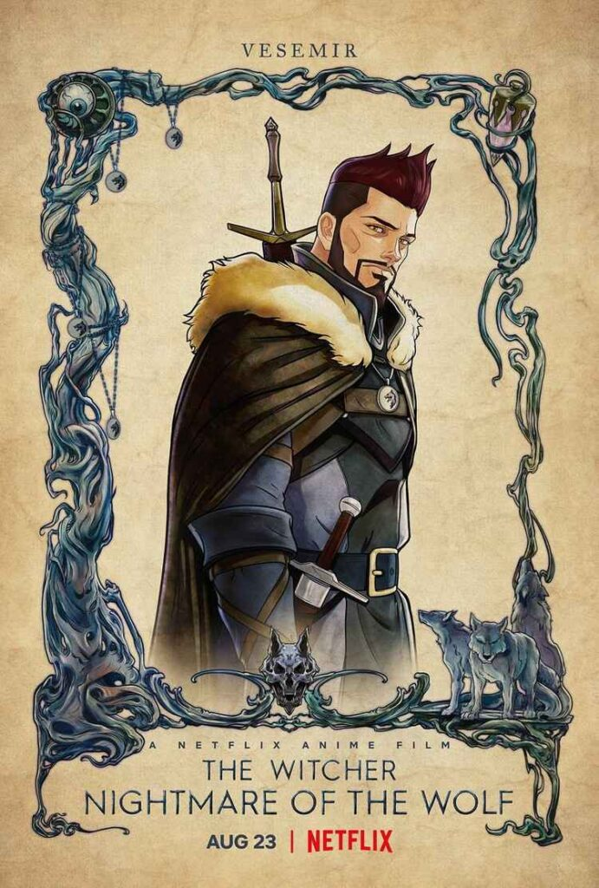
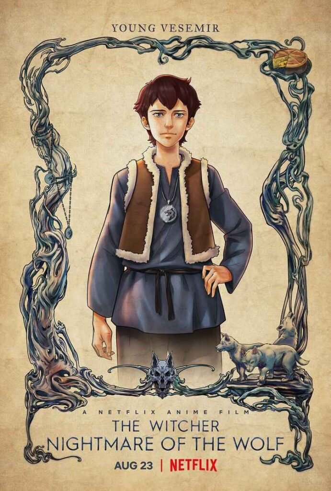
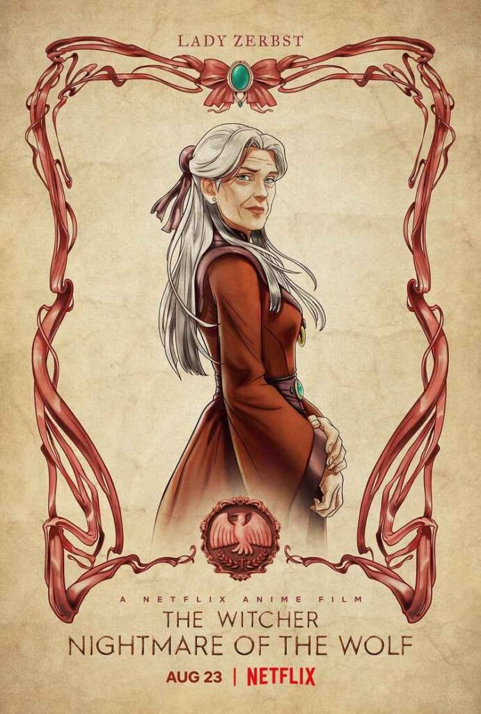
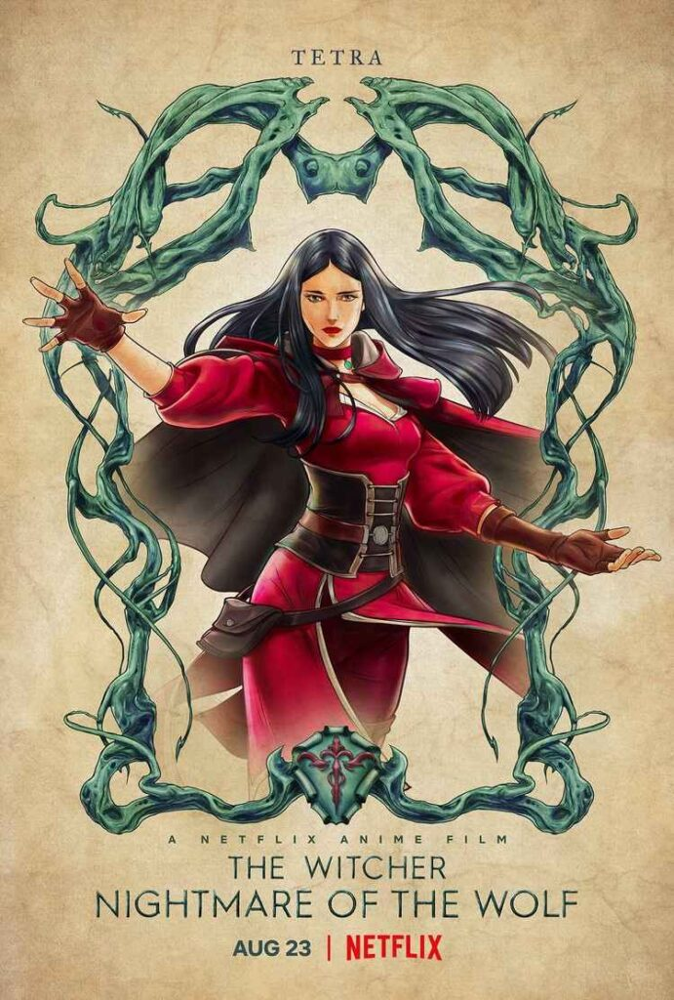
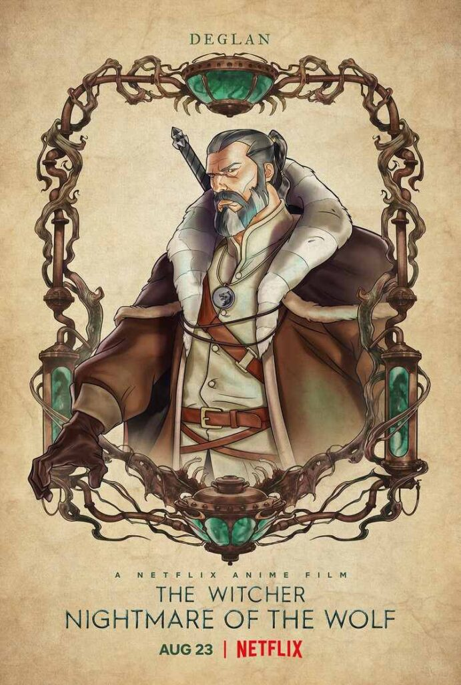
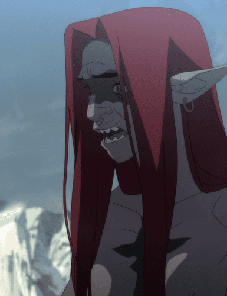
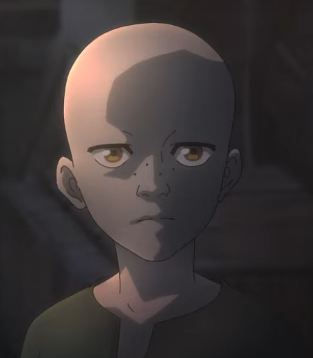

Sinopse
Ele escapou da pobreza para caçar monstros por dinheiro e glória, mas quando surge uma nova ameaça, Vesemir precisa enfrentar os demônios do passado.
Informações Básicas
Ano: 2021
Gênero: Anime, Animação, Ação, Fantasia
Duração: 83 min(1h23)
Ele escapou da pobreza para caçar monstros por dinheiro e glória, mas quando surge uma nova ameaça, Vesemir precisa enfrentar os demônios do passado.
Ano: 2021
Gênero: Anime, Animação, Ação, Fantasia
Duração: 83 min(1h23)
| Personagem | Ator/Atriz (Original) | Descrição | Imagem | |
|---|---|---|---|---|
| Vesemir | Theo James | O protagonista, um jovem bruxo que busca riquezas e aventuras. |  |  |
| Voltar para a Lista de Personagens. | ||||
| Lady lliyana Zerbst | Mary McDonnell | Uma nobre que apoia os bruxos e tenta equilibrar as tensões entre as diferentes facções. |  | |
| Voltar para a Lista de Personagens. | ||||
| Tetra Glicrest | Lara Pulver | Uma poderosa feiticeira que acredita que os bruxos são uma ameaça ao mundo. |  | |
| Voltar para a Lista de Personagens. | ||||
| Deglan | Graham McTavish | O líder dos bruxos e mentor de Vesemir. |  | |
| Voltar para a Lista de Personagens. | ||||
| Kitsu | Kari Wahlgren | Uma elfa transformada em leshen híbrida por magia corrompida. Ela busca vingança contra os bruxos usando ilusões e monstros, mostrando as consequências das mutações mágicas. |  | |
| Voltar para a Lista de Personagens. | ||||
| Geralt | Harry Hissrich | Aparece como uma criança órfã levada a Kaer Morhen para se tornar um bruxo. Embora sua participação seja breve, ele é mostrado no início de seu treinamento sob a tutela de Vesemir. |  | |
| Voltar para a Lista de Personagens. | ||||